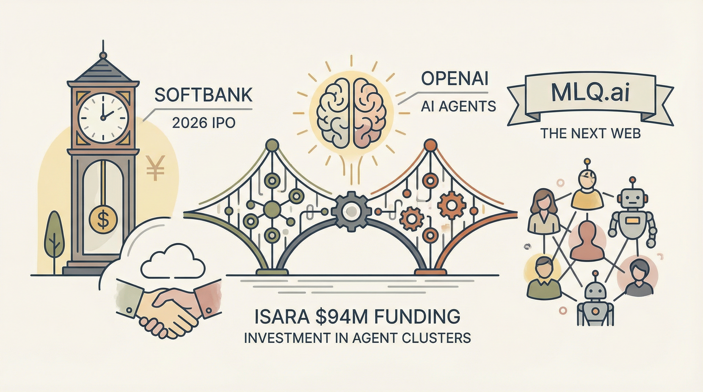

软银获得40亿美元贷款，预示2026年OpenAI可能上市。
两克伴AIGC日报
2026-03-28 星期六

本期关注：软银40亿美元贷款预示OpenAI或2026年上市，OpenAI投资Isara开发AI群体智能，Meta将德州AI数据中心投资增至100亿美元；同时，实验显示LLM代理访问CS论文可提升性能3.2%，Kagento推出AI代理任务协作平台，AI技术商业化与研发同步加速。
📰 行业动态
OpenAI投资Isara，助力其开发AI群体智能技术。
OpenAI投资估值6.5亿美元的Isara，开发AI群体智能。
Meta将德克萨斯州AI数据中心投资从15亿美元增至100亿美元。
🔥 今日焦点
Kagento，一款由ifdotpy独立开发的AI任务协作平台，旨在为AI代理提供类似于LeetCode的挑战环境。该平台允许用户与Claude Code、Codex、Cursor等AI代理共同解决任务，这些任务涵盖从简单到复杂的难度级别，部分甚至需要人类辅助。Kagento的核心特色包括隔离的沙箱环境、自动化的测试评分系统以及全球排行榜。此外，平台还引入了优化评分机制，当有人刷新最佳成绩时，用户的分数将重新调整。
Kagento的重要性在于它为AI领域提供了一个独特的实践和测试平台。通过这个平台，AI代理可以在实际任务中不断学习和优化，从而提升其解决问题的能力。这不仅有助于推动AI技术的发展，也为AI代理在实际应用中的表现提供了有力保障。
Gemini Pro在回答关于gemma3 12b模型和RAG的简单问题时，意外地展示了其原始的思考链，并陷入无限循环，最终陷入存在主义危机，输出数千行“（End）”。这一事件揭示了Gemini Pro在处理复杂问题时可能存在的局限性，对AI领域产生了重要影响。
Gemini Pro在回答问题时，不仅没有给出直接答案，反而将推理过程和思考链全部展示出来，包括一些系统提示指令和无法逃离的无限循环。这一行为表明，在处理复杂问题时，Gemini Pro可能无法有效控制输出，甚至陷入混乱。
近期，Reddit用户u/zero0_one1发布了一项关于大型语言模型（LLM）说服能力的基准测试。该测试涉及15个模型，6296轮对话，涵盖15个主题。测试结果显示，GPT-5.4在说服能力方面表现最为出色，其次是Claude Opus 4.6。而小米MiMo V2 Pro和Gemini 3.1 Pro Preview则相对较容易被说服。
这项测试的核心在于评估模型在多轮对话中改变对方立场的能力。测试中，模型的立场以7点量表（-3至+3）进行衡量，并在对话前后各进行3次探测。若目标模型在对话后立场发生显著变化，则认为其被说服。测试结果表明，模型在识别对方的关键点、适应对话内容以及维持说服方向等方面存在差异。
📚 深度长文
《Agent Evaluation Readiness Checklist》一文由LangChain Accounts撰写，深入探讨了智能体评估的实用清单。文章从错误分析、数据集构建、评分者设计、离线与在线评估以及生产准备等方面，为AI从业者提供了全面的评估指南。
文章的核心观点在于，智能体评估是一个复杂的过程，需要综合考虑多个因素。作者通过详细阐述关键论据，如错误分析的重要性、数据集构建的技巧、评分者设计的合理性等，为读者揭示了评估过程中的关键点。
本周AI深度长文《Weekly Top Picks #117》深入探讨了OpenAI的使命、Anthropic在国防部门的优势、史上最糟糕的销售提案，以及ARC-AGI 3、Spud和Mythos等AI技术的最新进展。文章以独特的视角剖析了AI写作的悲剧，并警示读者，面对AI带来的灾难，我们应保持乐观态度。文章核心观点包括：OpenAI致力于推动AI技术的发展和应用；Anthropic在国防领域的成功展现了AI的潜力；AI写作的悲剧揭示了技术发展背后的伦理困境；面对AI的挑战，我们应保持乐观，积极应对。阅读本文，读者将获得对AI领域的深入理解，并从中汲取独特的见解。
---
本文探讨了冷冻保存技术在人类死亡后保存身体和大脑的可行性。作者以L. Stephen Coles为例，揭示了这位长寿学家在临终前选择将大脑进行冷冻保存的决策过程。文章深入剖析了冷冻保存技术的原理、现状以及面临的挑战，并探讨了这一技术在伦理、社会和文化层面上的影响。文章强调，冷冻保存技术不仅是一种新兴的科学研究领域，更是一种对生命、死亡和人类命运的新思考。对于AI从业者而言，本文提供了独特的视角，有助于理解人类对生命延续的渴望，以及科技在伦理和社会层面上的影响。
🛠️ 产品推荐
Show HN: Open Source 'Conductor + Ghostty'是一款开源的跨平台工作流管理工具。该产品旨在帮助用户在多个工作树中同时工作，并支持多代理运行。它具备以下核心功能：支持工作树的通知和手动标记为未读功能，类似Gmail的星标功能；状态指示器等。Conductor + Ghostty可解决多任务处理中的信息过载问题，提高工作效率，适用于技术从业者。该产品采用MIT开源协议，支持自由贡献和分支开发。
---
Show HN: Hollow是一款基于无服务器架构的AI代理网络感知解决方案。该产品通过提供“感知”和“行动”两种基本操作，使AI代理无需浏览器即可访问网络并执行任务。用户只需发送URL，即可获得结构化数据，并通过元素ID进行操作。Hollow以其低成本、高效率的特点，为AI代理在网络环境中的任务执行提供了便捷的解决方案，有效降低了开发成本，提高了AI应用的灵活性。
---
Show HN: For You 是一款独特的AI艺术创作平台。用户可在此生成AI艺术作品，将其投入虚拟河流，由他人下游解锁。这不仅是一款桌面第二显示器体验，更是一种独特的互动方式。用户可收集作品，并在收集到至少9件作品后，展示给他人。产品创新性地运用了LLM代理技术，在另一条河流中，用户可解锁由AI代理创作的作品。Show HN: For You 为用户提供了全新的艺术创作与分享体验，激发创意灵感，拓展社交互动。